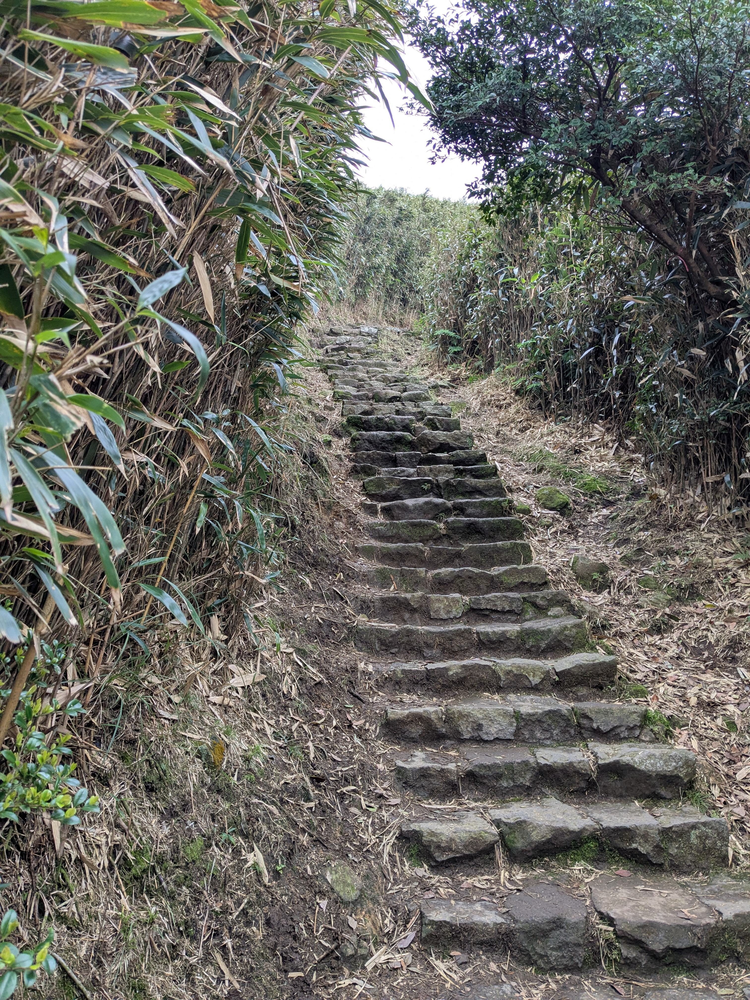
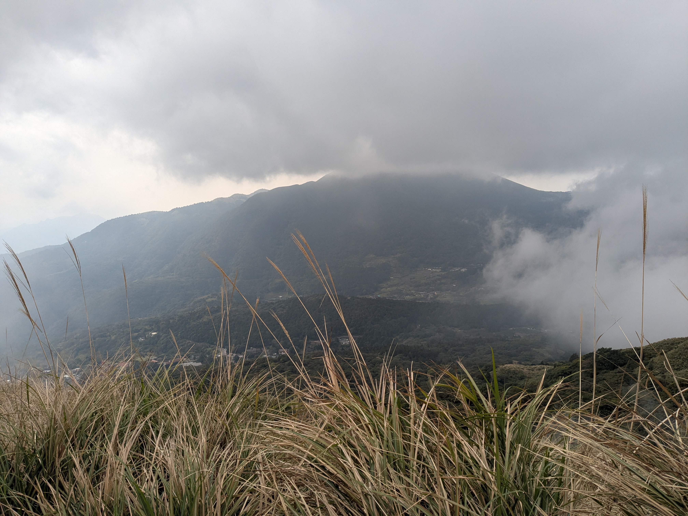
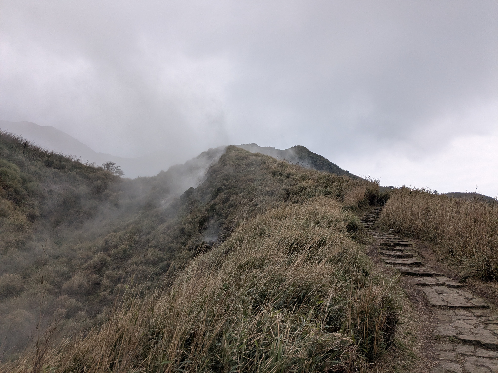

I have always prided myself at setting (and following through on) turnaround times. There's an art to setting a turnaround time. Usually you're trying to climb something, and so a simple "divide the time between now and when you want to be back here by 2, and turn around then" doesn't work, and is usually conservative. It is conditions-dependent, too. On easy terrain, down is a lot faster than up. But on more technical terrain, down really doesn't gain you much. And of course, fatigue has a role to play as well.
I don't have a formula, but I consider the various factors, pick a time, and it usually ends up working for me. This was no different.
I was touring Yangmingshan National Park in Taiwan with my wife, my sister, and her husband. I thought it would be really cool to bag a peak in their national park. The problem was, the tour bus is only allowed to stop for a certain amount of time before it has to continue on. Also typical for many of these trips for me, I didn't realize there was a climbable mountain until I had already wasted several precious minutes. Mt. Qixing, as I later learned it was called, is the highest peak in the park, and is a dormant volcano, but with lots of geothermal activity.



I located the trail the to top and charged up as fast as I could handle. I knew pretty quickly that I wasn't going to summit, but I wanted to see how closed I could get. After a bit over 550 feet of gain, I hit my turnaround time. I was around 100 meters from the top. I started barreling downhill. I burst out of the bamboo just in time to join the queue and be the last person on the bus. My wife was not pleased.